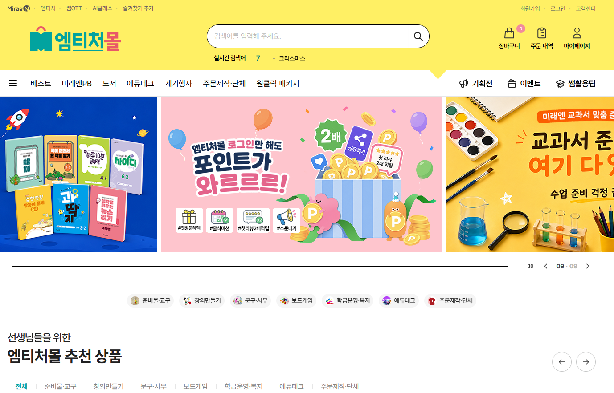

미래엔 초등교육 쇼핑몰
교육 상품 판매를 위한 쇼핑몰 구축 프로젝트. 공통 컴포넌트와 반응형 UI를 구현했습니다.
자세히 보기 →
화면을 만드는 것에서 끝나지 않고
사용자와 개발자가 편해지는 방법을 함께 고민합니다.

저는 화면을 만드는 사람이지만 화면만 보지는 않습니다. 사용자가 어디에서 헤매는지, 개발자가 어디에서 반복 작업을 하는지 함께 고민하며 더 나은 방법을 찾는 편입니다.
디자인과 퍼블리싱을 오랫동안 함께 해온 경험을 바탕으로 기획과 디자인, 개발 사이에서 필요한 일을 유연하게 해왔습니다.
제가 해온 작업 보기 →실무에서 사용하는 기술 스택입니다.
주요 프로젝트를 소개합니다.
어떤 방식으로 일하는지 보여드립니다.
화면을 만들기 전에
무엇이 필요한지 먼저 봅니다.
공통 요소와 사용자 흐름을
정리하고 구조를 잡습니다.
디자인 의도를 살리면서
실제 화면으로 구현합니다.
개발자와 의견을 나누고
필요한 부분을 계속 개선합니다.
원래 이렇게 해왔다고 끝내기보다,
"이렇게 하면 더 좋지 않을까요?"를
같이 이야기할 수 있는 팀을 찾고 있습니다.